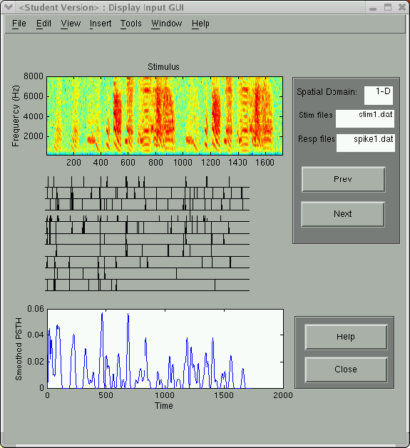
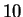
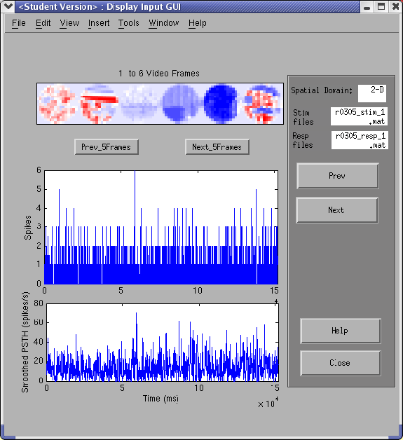

Next: Estimating the STRF
Up: Get Input
Previous: Parameters
Contents
For convenience, STRFPAK provides graphical display of the
input data in the Display Input window. You can check whether
the selected input data will work for later estimation and analysis.
There are two panels in the window: the left one shows the stimulus and response and the right one contains an information menu.
Figure 3.9:
Sample of an auditory stimulus-response pair
|
 |
Figure 3.9 shows
the spectrographic representation of a stimulus,  trials of neuron
response and its post-stimulus time histogram (PSTH) for the auditory example included.
Figure 3.10:
Sample of a visual stimulus-response pair
|
 |
Figure 3.10 shows the first  frames of a natural scene used in
the above visual example, one single trial
(since we have only one trial here)
and its PSTH.
In the figures, the left panel of the window is a graphical display
of the stimulus, trials of spike trains and the smoothed PSTH. Here are some more details on this panel.
frames of a natural scene used in
the above visual example, one single trial
(since we have only one trial here)
and its PSTH.
In the figures, the left panel of the window is a graphical display
of the stimulus, trials of spike trains and the smoothed PSTH. Here are some more details on this panel.
- Plot of the stimulus file:
If the dimensionality of the spatial domain is  ,
the x-axis is time (in milliseconds) and
the y-axis is the spatial domain (e.g. frequency in Hz for auditory spectrograms).
If the dimensionality of
the spatial domain is
,
the x-axis is time (in milliseconds) and
the y-axis is the spatial domain (e.g. frequency in Hz for auditory spectrograms).
If the dimensionality of
the spatial domain is  ,
the first video frames show up. For the current version of STRFPAK,
we only show the first frames.
,
the first video frames show up. For the current version of STRFPAK,
we only show the first frames.
- Raster plot of spike trains (in the order they were recorded):
Note: We only display the first 10 trials in the current
version of STRFPAK.
- Plot of the smoothed psth (in the time domain):
Note: If we have single trail spike train, we take its
psth as itself. Otherwise, we compute the average of
multiple trials as their psth. The smoothed psth is computed as a
convolution of the raw psth and a Hanning window.
The right panel shows information of the figures displayed in the left panel.
You can click  or
or  button
to display previous/next data sets
if multiple data pairs are selected.
The stimulus and response text fields show the input data pair files currently displayed.
button
to display previous/next data sets
if multiple data pairs are selected.
The stimulus and response text fields show the input data pair files currently displayed.
Next: Estimating the STRF
Up: Get Input
Previous: Parameters
Contents
2004-08-09